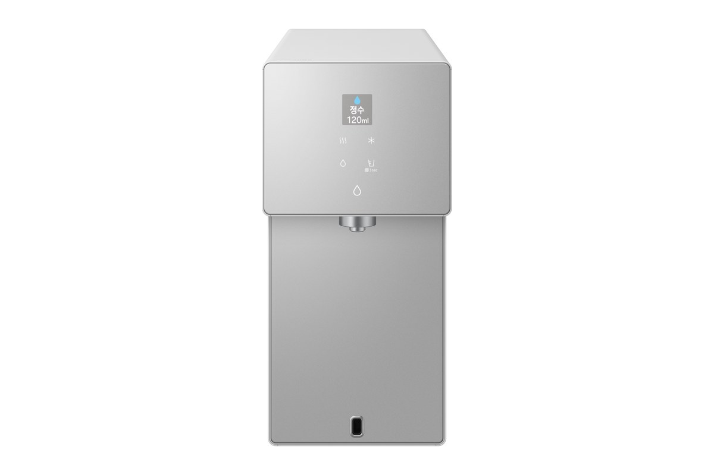
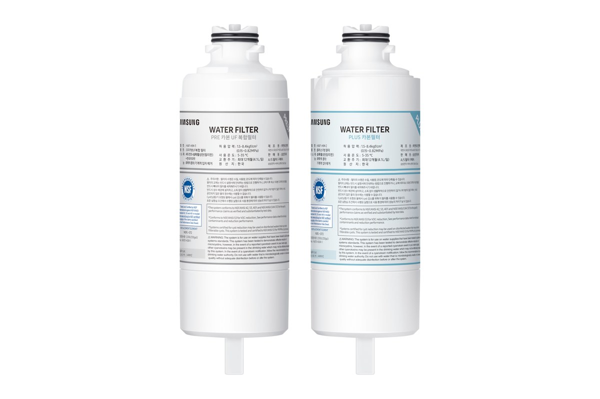
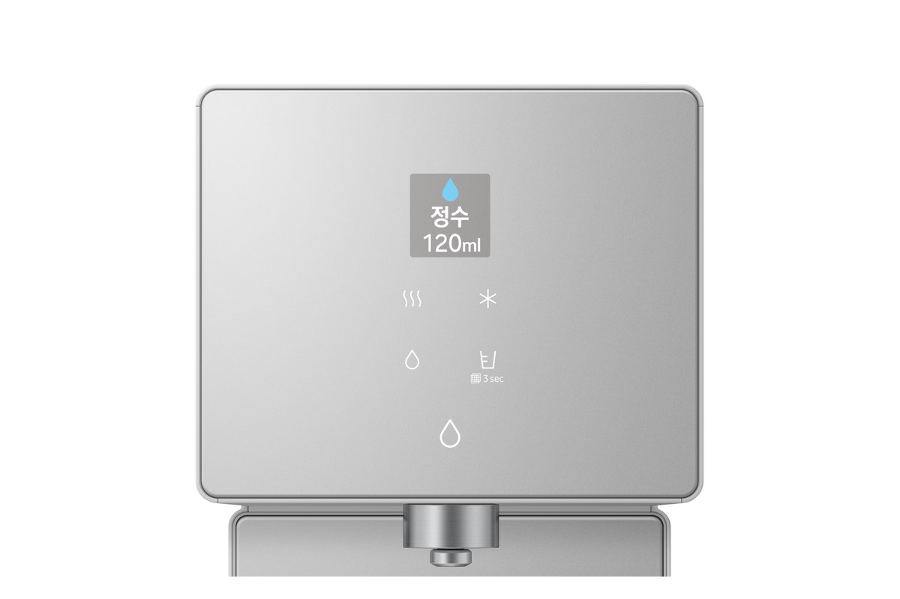
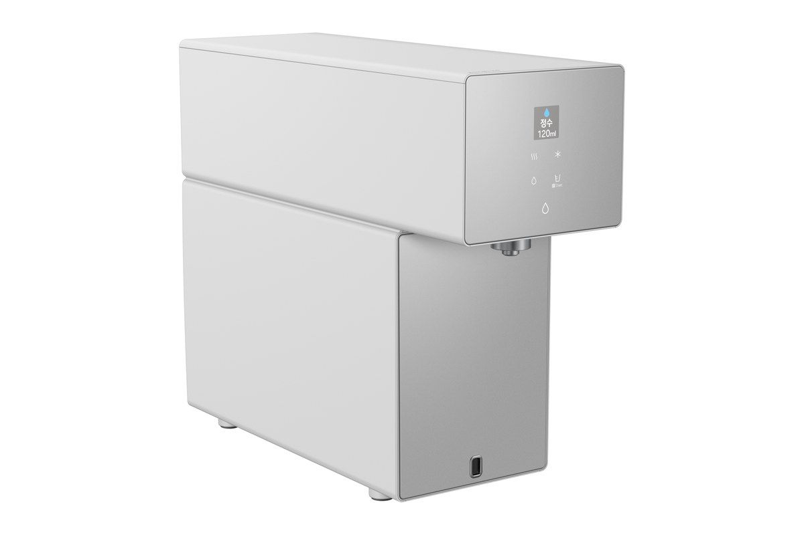

Samsung Bespoke AI Water Purifier RWP70F15 Review: Overview
This Samsung Bespoke AI water purifier review covers the RWP70F15 series, Samsung Korea's slim countertop purifier with cold, hot and room-temperature water. It is a direct-flow (tankless) design, so water is filtered as you pour, and the body is only 17 cm wide. Samsung launched it in August 2025 in Satin Greige, Satin Beige and Soapstone Charcoal.
The Samsung partner store listing on Naver Shopping Connect that we checked, sold as a "Bespoke AI stand coffee water purifier" for one-off purchase (not rental), was priced at 1,199,000 KRW when collected on October 27, 2026. On Samsung Korea's store, the Satin Greige RWP70F15ANW had a 4.7 / 5 rating from about 1,090 owner reviews when we checked. We checked specs against Samsung Korea's product page and Costco Korea's spec sheet. We did not install it in our own kitchen.
"A narrow, tidy countertop purifier with precise hot water and strong hygiene features. It is built for Korean kitchens and Korean voltage."

Filtration: Four Stages, NSF Tested
Water goes through four filter stages in two cartridges: a sediment filter, a pre-carbon block for heavy metals and chemicals, a UF (ultrafiltration) membrane for bacteria, viruses and fine particles, and a plus-carbon filter for a second pass. Samsung says the system is NSF certified under NSF/ANSI 42, 53 and 401 and NSF/ANSI/CAN 372 to reduce 82 contaminants, which it calls the most of any Korean-made purifier (as of June 25, 2025), including microplastics.
The filters are rated for 1,500 L or up to 12 months. Instead of changing them on a fixed date, the purifier counts the water you actually draw and warns you in the SmartThings app. If you ignore it, dispensing stops at 1,500 L or 438 days (120% of the 12-month life).

Hot Water Control and Coffee Brewing
Through SmartThings you can set hot water from 40 to 90 °C in 5 °C steps (11 settings) and the pour from 50 to 1,000 ml in 10 ml steps. That is useful for baby formula, green tea, pour-over coffee or measuring water for cooking. Bixby voice control can pour cold or room-temperature water by amount ("pour 120 ml"), check filter use and start sterilising; hot water can't be poured by voice.
The "coffee purifier" name in Korean listings comes from its coffee brewing mode. With Samsung's Bespoke brewer kit (RA-F00BAA), which replaces the normal faucet and is sold separately, it pours hot water in timed stages for consistent pour-over coffee. Check whether a listing includes the kit before you buy.

Hygiene: Auto Sterilising and Auto Drain
Direct-flow purifiers have no water tank to clean, but the pipes still need care. This one runs electrolytic sterilisation of the internal water line every three days at a time you choose; Samsung says it removes 99.9% of four test bacteria. When the purifier sits unused, it drains standing water every four hours so water does not sit in the line.
The pipes are stainless steel, and the stainless faucet detaches completely so you can see inside and wash it. The app reminds you to clean it every two weeks.

Key Specs
| Spec | Samsung Bespoke AI Water Purifier RWP70F15 (cold / hot / room temp) |
|---|---|
| Type | Countertop, direct-flow (tankless); cold, hot and room-temperature water |
| Models / colours | RWP70F15ANW Satin Greige, RWP70F15ANB Satin Beige, RWP70F15ANC Soapstone Charcoal |
| Size (W × H × D) | 170 × 395 × 480 mm |
| Weight | 11.4 kg |
| Power | 220 V / 60 Hz; cold 1.2 A, hot 2,600 W |
| Filters | 4 stages in 2 cartridges: sediment, pre-carbon, UF, plus-carbon |
| Filter life | 1,500 L or up to 12 months, tracked by actual use |
| Certification | NSF/ANSI 42, 53, 401 and NSF/ANSI/CAN 372 (82 contaminants, per Samsung) |
| Hot water | 40–90 °C in 5 °C steps (11 settings) |
| Pour amount | 50–1,000 ml in 10 ml steps (SmartThings) |
| Hygiene | Electrolytic line sterilising every 3 days; auto drain every 4 hours; detachable stainless faucet |
| Smart features | Wi-Fi, SmartThings, Bixby voice (cold / room-temp pouring) |
| Launched | August 2025 |
| Korean price | 1,199,000 KRW at a Samsung partner Naver store (collected Oct 27, 2026) |
Specs come from Samsung Korea's RWP70F15ANW product page and Costco Korea's spec sheet for the RWP70F15 series; the price comes from the Naver Shopping Connect listing. Filtration and sterilisation figures are Samsung's own test claims, and we did not test the purifier ourselves.
How It Compares
| Bespoke AI countertop RWP70F15 (this) | Bespoke under-sink cold/hot RWP54421 | Typical tank-type dispenser | |
|---|---|---|---|
| Where it goes | On the counter | Under the sink; only a faucet on top | On the counter or floor |
| Installation | Connects under the sink; no drilling | Needs a 25 mm hole in the countertop | Often no plumbing (refill tank or bottles) |
| Cold and hot water | Yes | Yes | Usually |
| Water storage | None (direct-flow) | None (direct-flow) | Stored in a tank you must clean |
| Best for | Renters and small kitchens | Owners who want a clear counter | Homes without plumbing access |
Pros & Cons
| Pros | Cons |
|---|---|
| Only 17 cm wide; fits narrow counters | Korean 220 V model; not for U.S. use |
| Hot water from 40 to 90 °C in 5 °C steps | Brewer kit and drip tray cost extra |
| No tank to clean; auto sterilising and auto drain | Still takes counter space, unlike under-sink models |
| Filters tracked by real use, not just time | Bixby voice cannot pour hot water |
| 4.7 / 5 from about 1,090 reviews on Samsung Korea | Needs Wi-Fi and SmartThings for most settings |
Who It Suits (and Who Should Skip It)
- Yes: Korean renters and small kitchens that want cold and hot water without drilling the counter.
- Yes: Tea and pour-over coffee drinkers who care about exact water temperature.
- Yes: Parents who want measured, temperature-set water for formula.
- No: Anyone who wants a clear countertop; look at under-sink models.
- No: Buyers outside Korea; choose a purifier sold for your country's voltage and plumbing.
Samsung Bespoke AI Water Purifier FAQ
What is the Samsung Bespoke AI water purifier RWP70F15?
It is Samsung's Korean-market Bespoke AI countertop water purifier with cold, hot and room-temperature water. It is a direct-flow (tankless) model, only 170 mm wide, launched in August 2025. Samsung sells it as RWP70F15ANW (Satin Greige), RWP70F15ANB (Satin Beige) and RWP70F15ANC (Soapstone Charcoal).
Is it a stand or countertop water purifier?
Korean shop listings sometimes call it a "stand" purifier, but Samsung describes it as a countertop type: it sits on the kitchen counter and connects to the water supply under the sink. The body is 170 × 395 × 480 mm and weighs 11.4 kg.
How often do the filters need changing?
It uses two cartridges with four filter stages (sediment, pre-carbon, UF and plus-carbon). Samsung rates them for 1,500 L or up to 12 months. The purifier measures how much water you actually use and tells you through SmartThings when it is time; both cartridges are changed together.
Can it make coffee?
It has a coffee brewing mode in the SmartThings app, but you need Samsung's Bespoke brewer kit (RA-F00BAA), sold separately, which replaces the normal faucet. With the kit, the purifier pours a set amount of hot water with pauses, like a pour-over. Hot water can be set from 40 to 90 °C in 5 °C steps.
Can I use the Korean RWP70F15 in the U.S.?
We don't recommend it. It is a 220 V / 60 Hz Korean model with Korean installation, filters and service. The Amazon button on this page searches for countertop hot and cold water purifiers sold for U.S. homes instead.
Countertop Hot & Cold Water Purifiers
The Korean RWP70F15 is sold through Korean retailers. Countertop hot and cold water purifiers for U.S. homes are sold under different models; compare current listings on Amazon.